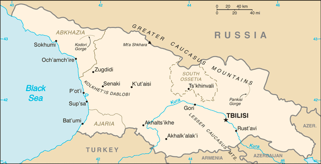
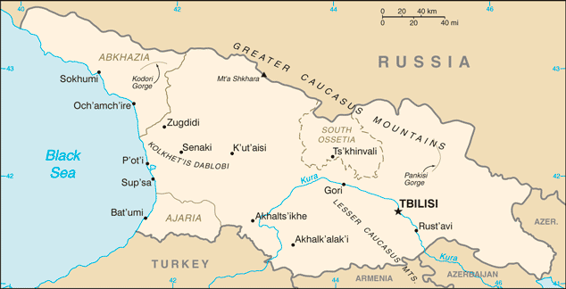

Middle East :: GEORGIA
Introduction :: GEORGIA
-
The region of present day Georgia contained the ancient kingdoms of Colchis and Kartli-Iberia. The area came under Roman influence in the first centuries A.D., and Christianity became the state religion in the 330s. Domination by Persians, Arabs, and Turks was followed by a Georgian golden age (11th-13th centuries) that was cut short by the Mongol invasion of 1236. Subsequently, the Ottoman and Persian empires competed for influence in the region. Georgia was absorbed into the Russian Empire in the 19th century. Independent for three years (1918-1921) following the Russian revolution, it was forcibly incorporated into the USSR in 1921 and regained its independence when the Soviet Union dissolved in 1991.Mounting public discontent over rampant corruption and ineffective government services, followed by an attempt by the incumbent Georgian Government to manipulate parliamentary elections in November 2003, touched off widespread protests that led to the resignation of Eduard SHEVARDNADZE, president since 1995. In the aftermath of that popular movement, which became known as the "Rose Revolution," new elections in early 2004 swept Mikheil SAAKASHVILI into power along with his United National Movement (UNM) party. Progress on market reforms and democratization has been made in the years since independence, but this progress has been complicated by Russian assistance and support to the separatist regions of Abkhazia and South Ossetia. Periodic flare-ups in tension and violence culminated in a five-day conflict in August 2008 between Russia and Georgia, including the invasion of large portions of undisputed Georgian territory. Russian troops pledged to pull back from most occupied Georgian territory, but in late August 2008 Russia unilaterally recognized the independence of Abkhazia and South Ossetia, and Russian military forces remain in those regions.Billionaire philanthropist Bidzina IVANISHVILI's unexpected entry into politics in October 2011 brought the divided opposition together under his Georgian Dream coalition, which won a majority of seats in the October 2012 parliamentary elections and removed UNM from power. Conceding defeat, SAAKASHVILI named IVANISHVILI as prime minister and allowed Georgian Dream to create a new government. Georgian Dream's Giorgi MARGVELASHVILI was inaugurated as president on 17 November 2013, ending a tense year of power-sharing between SAAKASHVILI and IVANISHVILI. IVANISHVILI voluntarily resigned from office after the presidential succession, and Georgia's legislature on 20 November 2013 confirmed Irakli GARIBASHVILI as his replacement. These changes in leadership represent unique examples of a former Soviet state that emerged to conduct democratic and peaceful government transitions of power. Popular and government support for integration with the West is high in Georgia. Joining the EU and NATO are among the country's top foreign policy goals.
Geography :: GEORGIA
-
Southwestern Asia, bordering the Black Sea, between Turkey and Russia, with a sliver of land north of the Caucasus extending into Europe; note - Georgia views itself as part of Europe; geopolitically, it can be classified as falling within Europe, the Middle East, or both42 00 N, 43 30 EAsiatotal: 69,700 sq kmland: 69,700 sq kmwater: 0 sq kmcountry comparison to the world: 121slightly smaller than South Carolina; slightly larger than West Virginiatotal: 1,814 kmborder countries (4): Armenia 219 km, Azerbaijan 428 km, Russia 894 km, Turkey 273 km310 kmterritorial sea: 12 nmexclusive economic zone: 200 nmwarm and pleasant; Mediterranean-like on Black Sea coastlargely mountainous with Great Caucasus Mountains in the north and Lesser Caucasus Mountains in the south; Kolkhet'is Dablobi (Kolkhida Lowland) opens to the Black Sea in the west; Mtkvari River Basin in the east; fertile soils in river valley flood plains and foothills of Kolkhida Lowlandmean elevation: 1,432 melevation extremes: lowest point: Black Sea 0 mhighest point: Mt'a Shkhara 5,201 mtimber, hydropower, manganese deposits, iron ore, copper, minor coal and oil deposits; coastal climate and soils allow for important tea and citrus growthagricultural land: 35.5%arable land 5.8%; permanent crops 1.8%; permanent pasture 27.9%forest: 39.4%other: 25.1% (2011 est.)4,330 sq km (2012)settlement coincides closely to the central valley, with emphasis on the capital city of Tbilisi in the east; smaller urban agglomerations dot the Black Sea coast, with Bat'umi being the largestearthquakesair pollution, particularly in Rust'avi; heavy pollution of Mtkvari River and the Black Sea; inadequate supplies of potable water; soil pollution from toxic chemicalsparty to: Air Pollution, Biodiversity, Climate Change, Climate Change-Kyoto Protocol, Desertification, Endangered Species, Hazardous Wastes, Law of the Sea, Ozone Layer Protection, Ship Pollution, Wetlandssigned, but not ratified: none of the selected agreementsstrategically located east of the Black Sea; Georgia controls much of the Caucasus Mountains and the routes through them
People and Society :: GEORGIA
-
4,928,052 (July 2016 est.)country comparison to the world: 123noun: Georgian(s)adjective: GeorgianGeorgian 86.8%, Azeri 6.3%, Armenian 4.5%, other 2.3% (2014 est.)Georgian (official) 87.6%, Azeri 6.2%, Armenian 3.9%, Russian 1.2%, other 1%note: Abkhaz is the official language in Abkhazia (2014 est.)Orthodox (official) 83.4%, Muslim 10.7%, Armenian Apostolic 2.9%, other 1.2% (includes Catholic, Jehovah's Witness, Yazidi, Protestant, Jewish), none 0.5%, unspecified/no answer 1.2% (2014 est.)0-14 years: 17.91% (male 463,526/female 419,334)15-24 years: 12.61% (male 326,675/female 294,912)25-54 years: 40.93% (male 980,024/female 1,037,044)55-64 years: 12.77% (male 282,067/female 347,287)65 years and over: 15.77% (male 304,668/female 472,515) (2016 est.)total dependency ratio: 45.7%youth dependency ratio: 25.2%elderly dependency ratio: 20.4%potential support ratio: 4.9% (2015 est.)total: 38 yearsmale: 35.1 yearsfemale: 40.7 years (2016 est.)country comparison to the world: 61-0.05% (2016 est.)country comparison to the world: 20612.5 births/1,000 population (2016 est.)country comparison to the world: 15810.9 deaths/1,000 population (2016 est.)country comparison to the world: 33-2.2 migrant(s)/1,000 population (2016 est.)country comparison to the world: 170settlement coincides closely to the central valley, with emphasis on the capital city of Tbilisi in the east; smaller urban agglomerations dot the Black Sea coast, with Bat'umi being the largesturban population: 53.6% of total population (2015)rate of urbanization: -0.1% annual rate of change (2010-15 est.)TBILISI (capital) 1.147 million (2015)at birth: 1.08 male(s)/female0-14 years: 1.11 male(s)/female15-24 years: 1.11 male(s)/female25-54 years: 0.95 male(s)/female55-64 years: 0.81 male(s)/female65 years and over: 0.64 male(s)/femaletotal population: 0.92 male(s)/female (2016 est.)24.4note: data do not cover Abkhazia and South Ossetia (2013 est.)36 deaths/100,000 live births (2015 est.)country comparison to the world: 91total: 15.6 deaths/1,000 live birthsmale: 17.8 deaths/1,000 live birthsfemale: 13.4 deaths/1,000 live births (2016 est.)country comparison to the world: 100total population: 76.2 yearsmale: 72.1 yearsfemale: 80.6 years (2016 est.)country comparison to the world: 881.76 children born/woman (2016 est.)country comparison to the world: 15953.4%note: percent of women aged 15-44 (2010)7.4% of GDP (2014)country comparison to the world: 344.27 physicians/1,000 population (2013)2.6 beds/1,000 population (2012)improved:urban: 100% of populationrural: 100% of populationtotal: 100% of populationunimproved:urban: 0% of populationrural: 0% of populationtotal: 0% of population (2015 est.)improved:urban: 95.2% of populationrural: 75.9% of populationtotal: 86.3% of populationunimproved:urban: 4.8% of populationrural: 24.1% of populationtotal: 13.7% of population (2015 est.)0.39% (2015 est.)country comparison to the world: 869,600 (2015 est.)country comparison to the world: 106200 (2015 est.)country comparison to the world: 11922.1% (2014)country comparison to the world: 821.1% (2009)country comparison to the world: 1312% of GDP (2012)country comparison to the world: 167definition: age 15 and over can read and writetotal population: 99.8%male: 99.8%female: 99.7% (2015 est.)total: 15 yearsmale: 15 yearsfemale: 15 years (2014)total number: 121,659percentage: 18% (2005 est.)total: 35.6%male: 35.3%female: 36.4% (2013 est.)country comparison to the world: 23
Government :: GEORGIA
-
conventional long form: noneconventional short form: Georgialocal long form: nonelocal short form: Sak'art'veloformer: Georgian Soviet Socialist Republicetymology: the Western name may derive from the Persian designation "gurgan" meaning "Land of the wolves"; the native name "Sak'art'velo" means "Land of the Kartvelians" and refers to the core central Georgian region of Kartlisemi-presidential republicname: Tbilisigeographic coordinates: 41 41 N, 44 50 Etime difference: UTC+4 (9 hours ahead of Washington, DC, during Standard Time)9 regions (mkharebi, singular - mkhare), 1 city (kalaki), and 2 autonomous republics (avtomnoy respubliki, singular - avtom respublika)regions: Guria, Imereti, Kakheti, Kvemo Kartli, Mtskheta Mtianeti, Racha-Lechkhumi and Kvemo Svaneti, Samegrelo and Zemo Svaneti, Samtskhe-Javakheti, Shida Kartli; note - the breakaway region of South Ossetia consists of the northern part of Shida Kartli, eastern slivers of the Imereti region and Racha-Lechkhumi and Kvemo Svaneti, and part of western Mtskheta-Mtianeticity: Tbilisiautonomous republics: Abkhazia or Ap'khazet'is Avtonomiuri Respublika (Sokhumi), Ajaria or Acharis Avtonomiuri Respublika (Bat'umi)note 1: the administrative centers of the two autonomous republics are shown in parenthesesnote 2: the United States recognizes the breakaway regions of Abkhazia and South Ossetia to be part of Georgia9 April 1991 (from the Soviet Union); notable earlier date: A.D. 1008 (Georgia unified under King BAGRAT III)Independence Day, 26 May (1918); note - 26 May 1918 was the date of independence from Soviet Russia, 9 April 1991 was the date of independence from the Soviet Unionprevious 1921, 1978 (based on 1977 Soviet Union constitution); latest approved 24 August 1995, effective 17 October 1995; amended several times, last in 2013 (2016)civil law systemaccepts compulsory ICJ jurisdiction; accepts ICCt jurisdictioncitizenship by birth: nocitizenship by descent only: at least one parent must be a citizen of Georgiadual citizenship recognized: noresidency requirement for naturalization: 10 years18 years of age; universalchief of state: President Giorgi MARGVELASHVILI (since 17 November 2013)head of government: Prime Minister Giorgi KVIRIKASHVILI (since 30 December 2015); First Deputy Prime Minister Dimitry KUMSISHVILIcabinet: Cabinet of Ministerselections/appointments: president directly elected by absolute majority popular vote in 2 rounds if needed for a 5-year term (eligible for a second term); election last held on 27 October 2013 (next to be held in October 2018); prime minister nominated by Parliament, appointed by the presidentelection results: Giorgi MARGVELASHVILI elected president; percent of vote - Giorgi MARGVELASHVILI (Georgian Dream) 62.1%, Davit BAKRADZE (UNM) 21.7%, Nino BURJANADZE 10.2%, other 6%description: unicameral Parliament or Sakartvelos Parlamenti (150 seats; 77 members directly elected in a single nationwide constituency by proportional representation vote and 73 directly elected in single-seat constituencies by simple majority vote; members serve 4-year terms)elections: last held on 8 October and 30 October 2012 (next to be held in 2020)election results: percent of vote by party - Georgian Dream-Democratic Georgia 48.7%, ENM 27.1%, Alliance of Patriots 5%, other 19.2%; seats by party - Georgian Dream-Democratic Georgia 115, ENM 27, Alliance of Patriots 6, IWSG 1, independent 1highest court(s): Supreme Court (organized into several specialized judicial chambers; number of judges determined by the president of Georgia); Constitutional Court (consists of 9 judges); note - the Abkhazian and Ajarian Autonomous republics each have a supreme court and a hierarchy of lower courtsnote: Supreme Court judges nominated by the president and appointed by the Parliament; judges serve not less than 10-year terms; Constitutional Court judges appointed by the president following candidate selection by the Justice Council of Georgia, a 12-member consultative body of high-level judges, and presidential and parliamentary appointees; judges appointed for 10-year termsjudge selection and term of office: Courts of Appeal; regional (town) and district courtssubordinate courts: Courts of Appeal; regional (town) and district courtsAlliance of Patriots [Irma INASHVILI]Conservative Party [Zviad DZIDZIGURI]European Democrats [Paata DAVITAIA]Free Georgia [Kakha KUKAVA]Georgian Dream-Democratic Georgia [Giorgi KVIRIKASHVILI]Green Party of Georgia [Gia GACHECHILADZE]Industry Will Save Georgia (Industrialists) or IWSG [Giorgi TOPADZE]National Democratic Party or NDP [Bachuki KARDAVA]National Forum [Kakhaber SHARTAVA]New Rights [Pikria CHIKHRADZE]Our Georgia-Free Democrats (OGFD) [Irakli ALASANIA]Republican Party [Khatuna SAMNIDZE]United Democratic Movement [Nino BURJANADZE]United National Movement or ENM [Davit BAKRADZE]other: separatists in the Russian-occupied regions of Abkhazia and South OssetiaADB, BSEC, CD, CE, CPLP (associate), EAPC, EBRD, FAO, G-11, GCTU, GUAM, IAEA, IBRD, ICAO, ICC (national committees), ICCt, ICRM, IDA, IFAD, IFC, IFRCS, ILO, IMF, IMO, Interpol, IOC, IOM, IPU, ISO (correspondent), ITSO, ITU, ITUC (NGOs), MIGA, OAS (observer), OIF (observer), OPCW, OSCE, PFP, SELEC (observer), UN, UNCTAD, UNESCO, UNIDO, UNWTO, UPU, WCO, WHO, WIPO, WMO, WTOchief of mission: Ambassador Archil GEGESHIDZE (since 12 April 2013)chancery: 1824 R Street NW, Washington, DC 20009telephone: [1] (202) 387-2390FAX: [1] (202) 387-0864consulate(s) general: New Yorkchief of mission: Ambassador Ian C. KELLY (since 17 September 2015)embassy: 11 George Balanchine Street, T'bilisi 0131mailing address: 7060 T'bilisi Place, Washington, DC 20521-7060telephone: [995] (32) 227-70-00FAX: [995] (32) 253-23-10white rectangle with a central red cross extending to all four sides of the flag; each of the four quadrants displays a small red bolnur-katskhuri cross; sometimes referred to as the Five-Cross Flag; although adopted as the official Georgian flag in 2004, the five-cross design appears to date back to the 14th centurySaint George, lion; national colors: red, whitename: "Tavisupleba" (Liberty)lyrics/music: Davit MAGRADSE/Zakaria PALIASHVILI (adapted by Joseb KETSCHAKMADSE)note: adopted 2004; after the Rose Revolution, a new anthem with music based on the operas "Abesalom da Eteri" and "Daisi" was adopted
Economy :: GEORGIA
-
Georgia's main economic activities include cultivation of agricultural products such as grapes, citrus fruits, and hazelnuts; mining of manganese, copper, and gold; and producing alcoholic and nonalcoholic beverages, metals, machinery, and chemicals in small-scale industries. The country imports nearly all of its needed supplies of natural gas and oil products. It has sizeable hydropower capacity that now provides most of its energy needs.Georgia has overcome the chronic energy shortages and gas supply interruptions of the past by renovating hydropower plants and by increasingly relying on natural gas imports from Azerbaijan instead of from Russia. Construction of the Baku-T'bilisi-Ceyhan oil pipeline, the South Caucasus gas pipeline, and the Kars-Akhalkalaki railroad are part of a strategy to capitalize on Georgia's strategic location between Europe and Asia and develop its role as a transit point for gas, oil, and other goods. The expansion of the South Caucasus pipeline, as part of the Shah Deniz II Southern Gas Corridor project, will result in a $2 billion foreign investment in Georgia, the largest ever in the country. Gas from Shah Deniz II is expected to begin flowing in 2019.Georgia's economy sustained GDP growth of more than 10% in 2006-07, based on strong inflows of foreign investment and robust government spending. However, GDP growth slowed following the August 2008 conflict with Russia, and sunk to negative 4% in 2009 as foreign direct investment and workers' remittances declined in the wake of the global financial crisis. The economy rebounded in 2010-13, but FDI inflows, the engine of Georgian economic growth prior to the 2008 conflict, have not recovered fully. Unemployment has also remained high.The country is pinning its hopes for renewed growth on a determined effort to continue to liberalize the economy by reducing regulation, taxes, and corruption in order to attract foreign investment, with a focus on hydropower, agriculture, tourism, and textiles production. Georgia has historically suffered from a chronic failure to collect tax revenues; however, since 2004 the government has simplified the tax code, improved tax administration, increased tax enforcement, and cracked down on petty corruption, leading to higher revenues. The government has received high marks from the World Bank for its anti-corruption efforts. Since 2012, the Georgian Dream-led government has continued the previous administration's low-regulation, low-tax, free market policies, while modestly increasing social spending, strengthening anti-trust policy, and amending the labor code to comply with International Labor Standards. The government published its 2020 Economic Development Strategy in early 2014 and former Prime Minister Bidzina IVANISHVILI launched the Georgian Co-Investment Fund, a $6 billion private equity fund that will invest in tourism, agriculture, logistics, energy, infrastructure, and manufacturing. In mid-2014, Georgia signed an association agreement with the EU, paving the way to free trade and visa-free travel.$35.6 billion (2015 est.)$34.65 billion (2014 est.)$33.12 billion (2013 est.)note: data are in 2015 US dollarscountry comparison to the world: 120$14.01 billion (2015 est.)2.8% (2015 est.)4.6% (2014 est.)3.4% (2013 est.)country comparison to the world: 111$9,600 (2015 est.)$9,300 (2014 est.)$8,800 (2013 est.)note: data are in 2015 US dollarscountry comparison to the world: 13919.6% of GDP (2015 est.)18.7% of GDP (2014 est.)18.5% of GDP (2013 est.)country comparison to the world: 85household consumption: 71.2%government consumption: 16.5%investment in fixed capital: 28.5%investment in inventories: 3.7%exports of goods and services: 45%imports of goods and services: -64.9% (2015 est.)agriculture: 9.2%industry: 22.1%services: 68.7% (2015 est.)citrus, grapes, tea, hazelnuts, vegetables; livestocksteel, machine tools, electrical appliances, mining (manganese, copper, gold), chemicals, wood products, wine3.2% (2015 est.)country comparison to the world: 701.959 million (2011 est.)country comparison to the world: 123agriculture: 55.6%industry: 8.9%services: 35.5% (2006 est.)12% (2015 est.)12.4% (2014 est.)country comparison to the world: 1359.2% (2010 est.)lowest 10%: 2%highest 10%: 31.3% (2008)46 (2011)37.1 (1996)country comparison to the world: 35revenues: $3.966 billionexpenditures: $4.142 billion (2015 est.)28.3% of GDP (2015 est.)country comparison to the world: 93-1.3% of GDP (2015 est.)country comparison to the world: 6741.4% of GDP (2015 est.)35.4% of GDP (2014 est.)note: data cover general government debt, and includes debt instruments issued (or owned) by government entities other than the treasury; the data include treasury debt held by foreign entities; the data include debt issued by subnational entities; Georgia does not maintain intra-governmental debt or social fundscountry comparison to the world: 110calendar year4% (2015 est.)3.1% (2014 est.)country comparison to the world: 1543.75% (15 January 2013)5.25% (31 December 2012)note: this is the Refinancing Rate, the key monetary policy rate of the National Bank of Georgiacountry comparison to the world: 9912.49% (31 December 2015 est.)11.91% (31 December 2014 est.)country comparison to the world: 63$2.063 billion (31 December 2015 est.)$2.388 billion (31 December 2014 est.)country comparison to the world: 128$4.72 billion (31 September 2012 est.)$4.249 billion (31 December 2011 est.)country comparison to the world: 133$6.946 billion (31 December 2015 est.)$7.51 billion (31 December 2014 est.)country comparison to the world: 114$943.4 million (31 December 2012 est.)$795.7 million (31 December 2011 est.)$1.06 billion (31 December 2010 est.)country comparison to the world: 107-$1.627 billion (2015 est.)-$1.745 billion (2014 est.)country comparison to the world: 140$3.043 billion (2015 est.)$3.995 billion (2014 est.)country comparison to the world: 125vehicles, ferro-alloys, fertilizers, nuts, scrap metal, gold, copper oresAzerbaijan 10.9%, Bulgaria 9.7%, Turkey 8.4%, Armenia 8.2%, Russia 7.4%, China 5.7%, US 4.7%, Uzbekistan 4.4% (2015)$7.363 billion (2015 est.)$8.29 billion (2014 est.)country comparison to the world: 110fuels, vehicles, machinery and parts, grain and other foods, pharmaceuticalsTurkey 17.2%, Russia 8.1%, China 7.6%, Azerbaijan 7%, Ireland 5.9%, Ukraine 5.9%, Germany 5.6% (2015)$2.521 billion (31 December 2015 est.)$2.699 billion (31 December 2014 est.)country comparison to the world: 110$13.31 billion (31 December 2015 est.)$13.91 billion (31 December 2014 est.)country comparison to the world: 101$12.64 billion (31 December 2015 est.)$12.9 billion (31 December 2014 est.)country comparison to the world: 90$1.773 billion (31 December 2015 est.)$1.868 billion (31 December 2014 est.)country comparison to the world: 80laris (GEL) per US dollar -2.2694 (2015 est.)1.7657 (2014 est.)1.7657 (2013 est.)1.65 (2012 est.)1.6865 (2011 est.)
Energy :: GEORGIA
-
electrification - total population: 100% (2016)10 billion kWh (2014 est.)country comparison to the world: 999.8 billion kWh (2014 est.)country comparison to the world: 95600 million kWh (2014 est.)country comparison to the world: 66900 million kWh (2014 est.)country comparison to the world: 724.2 million kW (2014 est.)country comparison to the world: 7739.2% of total installed capacity (2012 est.)country comparison to the world: 1660% of total installed capacity (2012 est.)country comparison to the world: 9760.8% of total installed capacity (2012 est.)country comparison to the world: 350% of total installed capacity (2012 est.)country comparison to the world: 176799.5 bbl/day (2015 est.)country comparison to the world: 941,120 bbl/day (2013 est.)country comparison to the world: 850 bbl/day (2013 est.)country comparison to the world: 19535 million bbl (1 January 2016 es)country comparison to the world: 820 bbl/day (2013 est.)country comparison to the world: 18620,000 bbl/day (2014 est.)country comparison to the world: 127257.6 bbl/day (2013 est.)country comparison to the world: 12322,830 bbl/day (2013 est.)country comparison to the world: 1085.663 million cu m (2011 est.)country comparison to the world: 1912.18 billion cu m (2014 est.)country comparison to the world: 790 cu m (2013 est.)country comparison to the world: 1042.18 billion cu m (2014 est.)country comparison to the world: 498.495 billion cu m (1 January 2016 es)country comparison to the world: 837 million Mt (2013 est.)country comparison to the world: 121
Communications :: GEORGIA
-
total subscriptions: 950,167subscriptions per 100 inhabitants: 19 (July 2015 est.)country comparison to the world: 73total: 5.551 millionsubscriptions per 100 inhabitants: 113 (July 2015 est.)country comparison to the world: 114general assessment: fixed-line telecommunications network has limited coverage outside Tbilisi; multiple mobile-cellular providers provide services to an increasing subscribership throughout the countrydomestic: cellular telephone networks cover the entire country; mobile-cellular teledensity roughly 110 per 100 persons; intercity facilities include a fiber-optic line between T'bilisi and K'ut'aisiinternational: country code - 995; the Georgia-Russia fiber-optic submarine cable provides connectivity to Russia; international service is available by microwave, landline, and satellite through the Moscow switch; international electronic mail and telex service are available (2015)1 public broadcaster in Tbilisi, 1 state-owned broadcaster in Ajaria Autonomous Republic; 8 privately owned TV stations; state-run public broadcaster operates 2 TV stations; dozens of cable TV operators, several major commercial TV stations, and several dozen private radio stations; state-run public broadcaster operates 2 radio stations (2012).getotal: 2.227 millionpercent of population: 45.2% (July 2015 est.)country comparison to the world: 91
Transportation :: GEORGIA
-
number of registered air carriers: 5inventory of registered aircraft operated by air carriers: 13annual passenger traffic on registered air carriers: 232,263annual freight traffic on registered air carriers: 185,040 mt-km (2015)4L (2016)22 (2013)country comparison to the world: 135total: 18over 3,047 m: 12,438 to 3,047 m: 71,524 to 2,437 m: 3914 to 1,523 m: 5under 914 m: 2 (2013)total: 41,524 to 2,437 m: 1914 to 1,523 m: 2under 914 m: 1 (2013)2 (2013)gas 1,596 km; oil 1,175 km (2013)total: 1,363 kmbroad gauge: 1,326 km 1.520-m gauge (1,251 km electrified)narrow gauge: 37 km 0.912-m gauge (37 km electrified) (2014)country comparison to the world: 81total: 19,109 kmpaved: 19,109 km (includes 69 km of expressways) (2010)country comparison to the world: 113total: 142by type: bulk carrier 13, cargo 114, chemical tanker 1, container 1, liquefied gas 1, passenger/cargo 1, petroleum tanker 3, refrigerated cargo 1, roll on/roll off 5, vehicle carrier 2foreign-owned: 95 (Bulgaria 1, China 10, Egypt 7, Hong Kong 3, Israel 1, Italy 2, Latvia 1, Lebanon 1, Romania 7, Russia 6, Syria 24, Turkey 14, UAE 2, UK 5, Ukraine 10, US 1)registered in other countries: 1 (unknown 1) (2010)country comparison to the world: 40major seaport(s): Black Sea - Bat'umi, P'ot'i
Military and Security :: GEORGIA
-
Georgian Armed Forces: Land Forces (include Air and Air Defense Forces); separatist Abkhazia Armed Forces: Ground Forces, Air Forces; separatist South Ossetia Armed Forcesnote: Georgian naval forces have been incorporated into the Coast Guard, which is part of the Ministry of Internal Affairs rather than the Ministry of Defense (2015)18 to 34 years of age for compulsory and voluntary active duty military service; conscript service obligation is 18 months (2012)2.26% of GDP (2014)2.7% of GDP (2013)2.88% of GDP (2012)3.25% of GDP (2011)2.88% of GDP (2010)country comparison to the world: 27
Transnational Issues :: GEORGIA
-
Russia's military support and subsequent recognition of Abkhazia and South Ossetia independence in 2008 continue to sour relations with GeorgiaIDPs: 268,416 (displaced in the 1990s as a result of armed conflict in the breakaway republics of Abkhazia and South Ossetia; displaced in 2008 by fighting between Georgia and Russia over South Ossetia) (2015)stateless persons: 627 (2015)limited cultivation of cannabis and opium poppy, mostly for domestic consumption; used as transshipment point for opiates via Central Asia to Western Europe and Russia